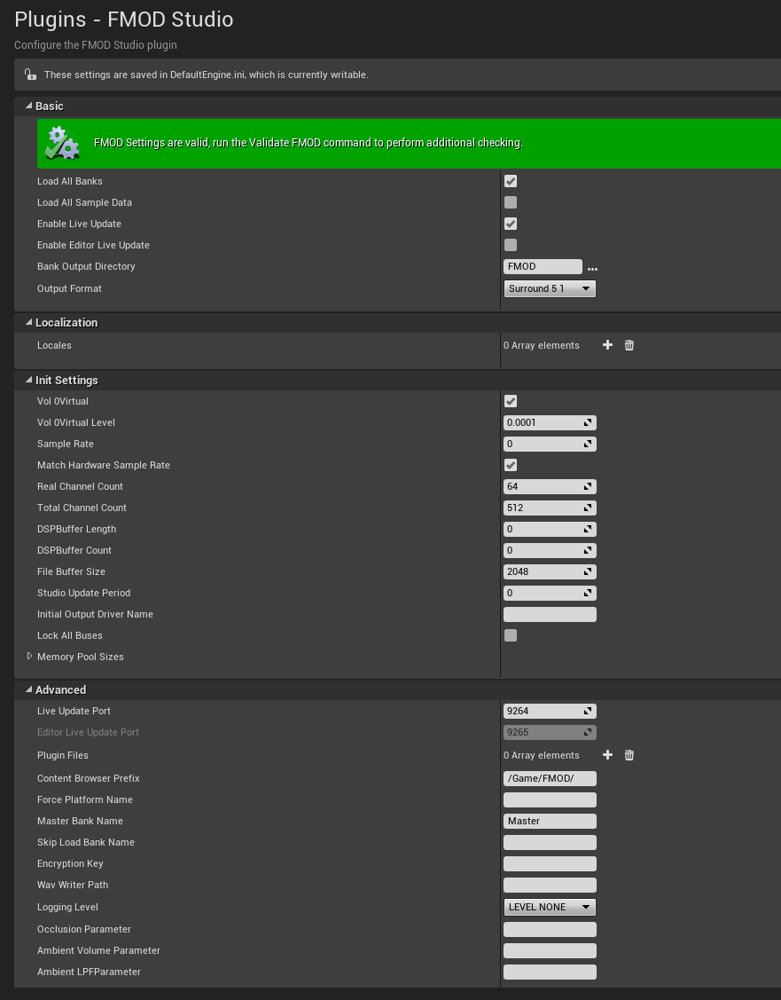

UE4 Integration 2.01
The FMOD UE4 Integration settings can be found in the UE4 Editor, under "Project Settings > Plugins > FMOD Studio". 
UE4 Integration 2.01.07 (2020-12-18). © 2020 Firelight Technologies Pty Ltd.